6 Zakoduj to sam
W tym rozdziale przedstawimy podstawy pakietu ggplot2, który jest wyśmienitym narzędziem do tworzenia wykresów statystycznych. Dlaczego akurat ten pakiet? Przecież jest tak wiele innych prostych w użyciu narzędzi do tworzenia wykresów. Wśród tych wykorzystywanych przez osoby zawodowo prezentujące liczby, możemy wyróżnić trzy rodzaje:
- Zaawansowane programy graficzne typu GIMP (bezpłatny program do grafiki rastrowej), Adobe Illustrator czy Inkscape (bezpłatny program do grafiki wektorowej) pozwalają na stworzenie dowolnego wykresu. Wyobraźnia twórcy nie jest praktycznie niczym ograniczona, w tych narzędziach można tworzyć dosłownie dzieła sztuki. Zazwyczaj jednak polerowanie szczegółów wymaga ręcznych modyfikacji, dużych umiejętności i jest trudno automatyzowalne.
- Programy typu Calc (darmowy arkusz kalkulacyjny), Excel czy Tableau (narzędzie do budowy dashboardów) pozwalają na szybkie tworzenie wykresów za pomocą zbioru szablonów. Szybkość jest tutaj kluczowym atutem. Użytkownik może błyskawicznie ,,wyklikać’’ szablon, wskazać kolumny w danych, które parametryzują szablon. Klik, klik, klik i kolejny wykres gotowy.
- Języki programowania i specjalne pakiety graficzne, np. takie jak
ggplot2dla programu R. Korzystanie z takich narzędzi wymaga umiejętności programowania, więc próg wejścia jest wyższy niż w przypadku poprzednio prezentowanych podejść. Ma to jednak dwie zalety. Po pierwsze, gdy już opanujemy ten język, to taśmowe tworzenie wykresów można automatyzować. Jeżeli często tworzymy wykresy, to ta automatyzacja jest bezcenna. Po drugie, często te narzędzia są bardzo elastyczne i pozwalają na budowę zarówno prostych, jak i bardzo zaawansowanych wykresów.
Warto oczywiście znać kilka narzędzi do tworzenia wykresów, by samemu poznawać ich wady i zalety. Ponieważ tworzę dużo wykresów i bardzo zależy mi na ich czytelności i estetyce, więc dla mnie pakiet ggplot2 jest zazwyczaj narzędziem pierwszego wyboru.
Nazwa ggplot2 pochodzi od angielskiego określenia grammar of graphics, czyli gramatyka grafiki. Pierwsza wersja pakietu została opracowana przez Hadleya Wickhama. Gramatyka ta jest oparta na bogatszej gramatyce, którą stworzył Leland Wilkinson, opisanej w książce The Grammar of Graphics (Wilkinson 1999). Z kolei gramatyka przedstawiona przez Wilkinsona bazuje na wynikach Jacquesa Bertina i jego pracy . Korzysta też z rezultatów osiągniętych w bardzo wielu różnych dyscyplinach, od kartografii, przez badania percepcji i kognitywistykę, po lingwistykę, matematykę i statystykę.
Korzystanie z tej gramatyki wymaga pewnego treningu myślenia o danych i zależności. Ale ten trening się opłaca. Gdy już opanujemy tę gramatykę, to będziemy w stanie lepiej formułować opowieści o danych. Ten trening myślenia przyda się, nawet jeżeli w przyszłości będziemy korzystać z innego języka programowania lub innych bibliotek do tworzenia wykresów.
6.1 Przygotowanie do pracy
W tym rozdziale przedstawiamy instrukcje pozwalające na odtworzenie wykresów z rozdziału Sprawdzone przepisy. Aby przedstawione poniżej polecenia zadziałały, należy wcześniej zainstalować program R. Można go pobrać ze strony https://cran.r-project.org/. Następnie należy zainstalować pakiet statystyczny ggplot2, co można zrobić instrukcją install.packages("ggplot2") wpisaną do uruchomionego programu R.
Po zainstalowaniu niezbędnych komponentów należy włączyć ten pakiet poleceniem library(). Po wykonaniu tych instrukcji mamy dostęp do funkcji graficznych opisanych poniżej.
library("ggplot2")
library("ggthemes")Teraz potrzebujemy danych, które możemy przedstawić na wykresach. Pakiet ggplot2 (jak i wiele innych narzędzi) zakłada, że dane znajdują się w postaci tabelarycznej, w której w kolumnach ujęte są zmienne, a w wierszach obserwacje.
Przykłady przedstawione w tym rozdziale oparte są na danych o produktach spożywczych, które poznaliśmy już w rozdziale Sprawdzone przepisy. Dane znajdują się w pakiecie BetaBit i po zainstalowaniu oraz wczytaniu tego pakietu będą dostępne w zbiorze danych food. Dane są dostępne w języku angielskim, ale poniżej dla czytelności przedstawiliśmy nazwy zmiennych przetłumaczone na język polski.
library("BetaBit")
head(food)Po załadowaniu pakietu graficznego i danych jesteśmy gotowi do tworzenia wykresów. Poniżej przedstawiamy odpowiednie instrukcje krok po kroku.
Tworzenie wykresu w pakiecie ggplot2 jest bardzo interaktywnym i iteracyjnym procesem. W każdej iteracji coś do wykresu się dodaje lub usuwa i szuka się kolejnej rzeczy do poprawy. Pozwala to na stopniowe doskonalenie wykresu i buduje wartościowe nawyki systematycznej eksploracji danych, które tak się przydają przy pracy z danymi. Poniżej, obok kolejnych instrukcji, pokazujemy, jak wygląda wykres na danym etapie.
6.2 Histogram krok po kroku
Pierwszy wykres, jaki przygotujemy, to będzie histogram prezentujący rozkład wartości energetycznej dla produktów dostępnych w zbiorze danych.
Krok 1 – Dane i osie.
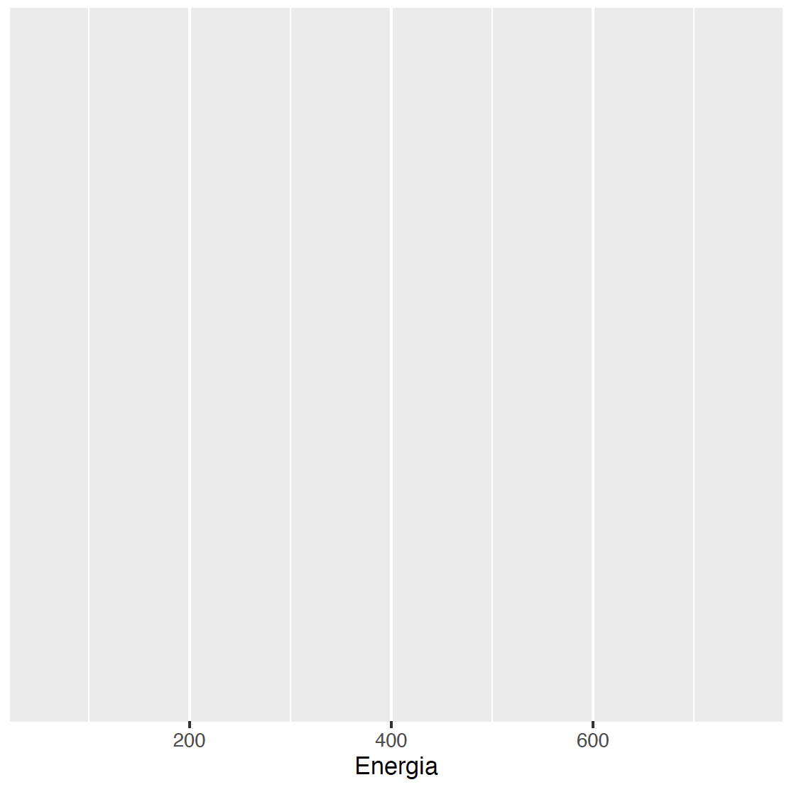
Każdy wykres zaczyna się od wskazania, na jakich danych jest oparty i które zmienne z tych danych będą przedstawione na osiach. W tym przypadku będziemy pracować na zbiorze danych food i interesuje nas rozkład wartości zmiennej Energia.
Tworzymy szkielet wykresu następującym poleceniem:
ggplot(data = food, aes(x = Energia))Krok 2 – Histogram.
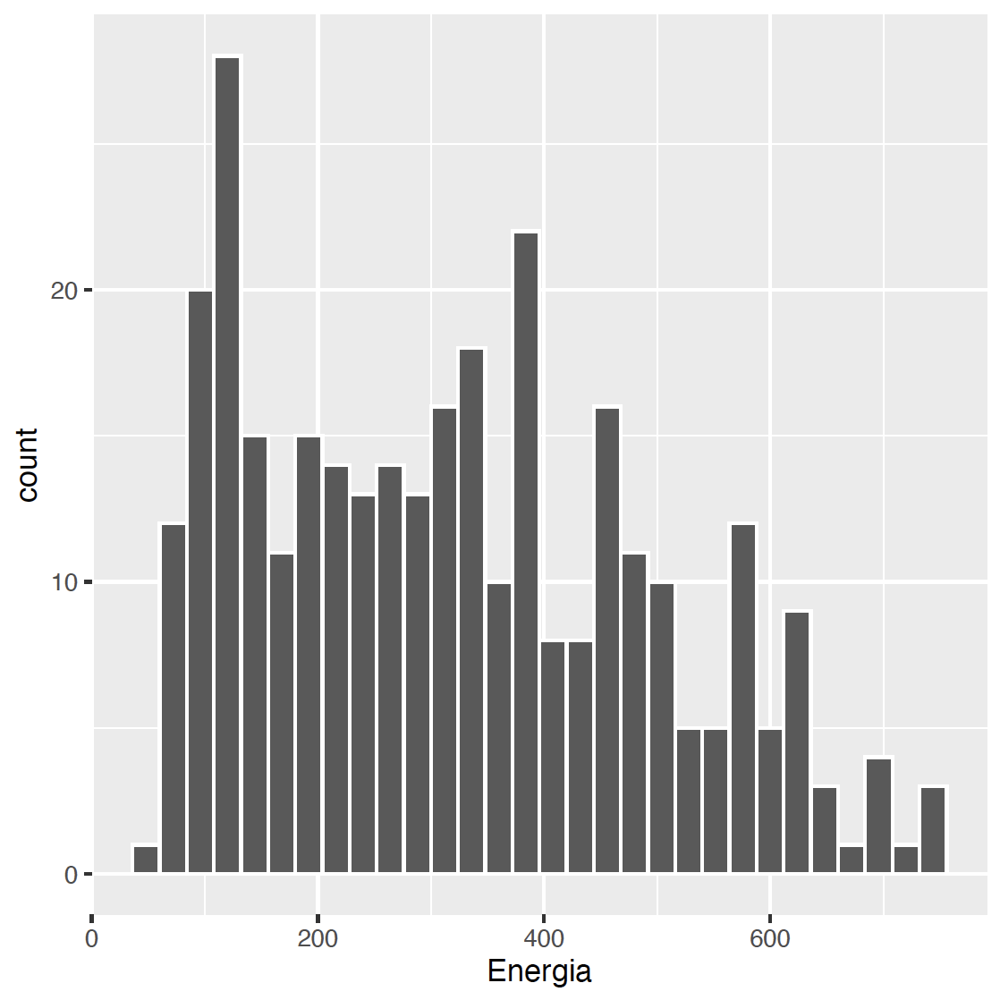
Rodzaje graficznych prezentacji danych w pakiecie ggplot2 nazywa się geometriami. Jest ich dostępnych bardzo wiele, odpowiadają im funkcje o nazwach zaczynających się od prefiksu geom_. W tym przypadku geometria geom_histogram() rysuje histogram dla określonej wcześniej zmiennej.
Składnia pakietu ggplot2 zakłada dodawanie kolejnych elementów do szkieletu wykresu. Stąd wykres z geometrią histogram konstruuje się następującym poleceniem:
ggplot(data = food, aes(x = Energia)) +
geom_histogram(color = "white")Krok 3 – Small multiples.
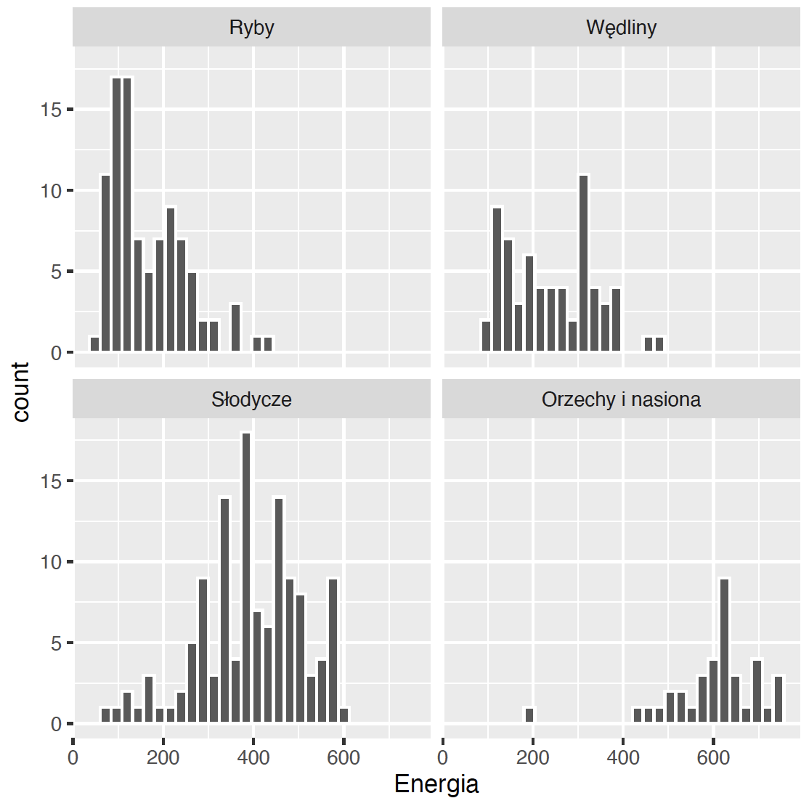
Jednym ze sposobów porównania rozkładu zmiennej pomiędzy grupami jest użycie techniki small multiples. Dane są prezentowane na siatce wykresów o takich samych osiach, ale przedstawiających podzbiory obserwacji. Dzięki temu łatwiej dostrzec podobieństwa i różnice pomiędzy tymi grupami.
W pakiecie ggplot2 ten efekt można uzyskać, dodając czynnik facet_wrap i wskazując, która zmienna jest użyta do grupowania.
Zaprezentowana na marginesie wizualizacja pozwala szybko dostrzec, że wartość energetyczna ryb jest średnio niższa niż produktów z grupy mięsa, słodycze lub orzechy.
ggplot(data = food, aes(x = Energia)) +
geom_histogram(color = "white") +
facet_wrap(~Grupa)Krok 4 – Motyw graficzny / Skórka.
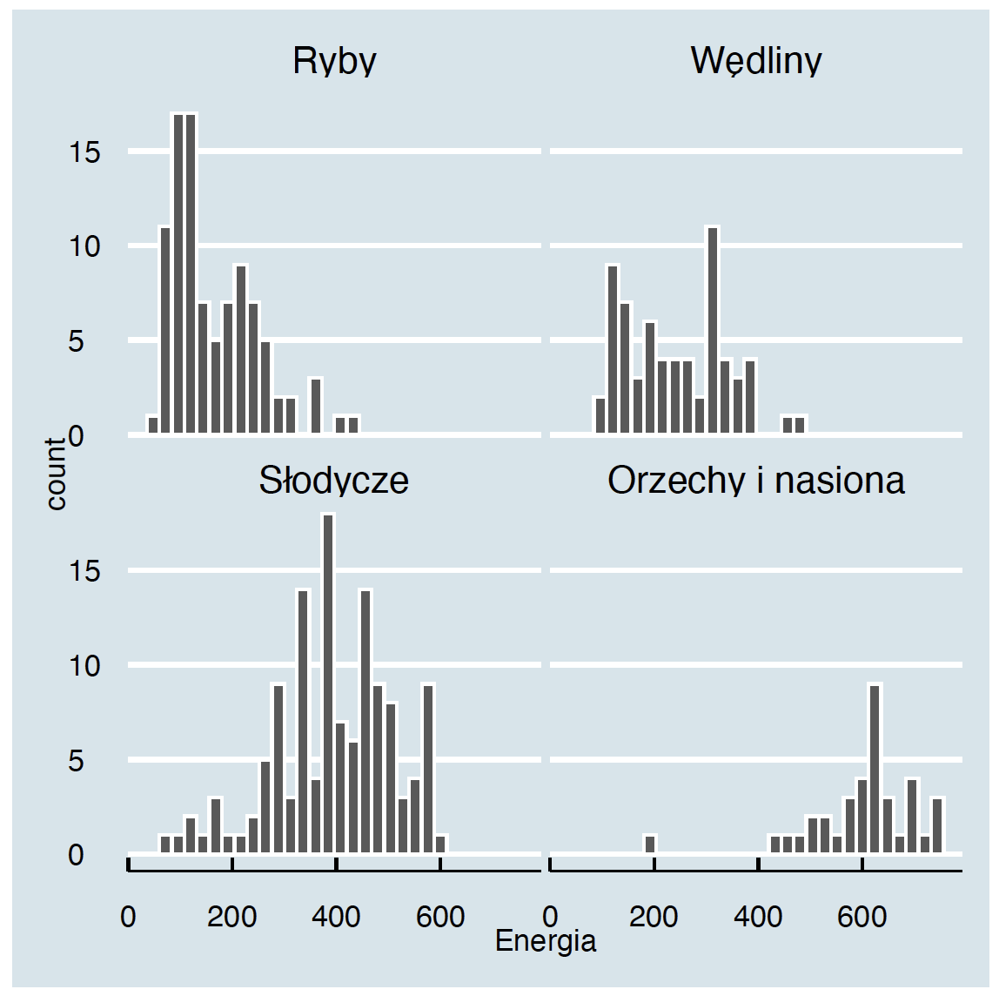
Mamy już na wykresie główną treść, czas na polerowanie wizualne. Pakiet ggplot2 jest bardzo konfigurowalny, można kontrolować praktycznie każdy detal wykresu. Służy do tego funkcja theme().
Ponieważ jednak świat nie kończy się na jednym wykresie, ale chcemy generować setki podobnych wizualnie wykresów, więc pracując nad detalami, często wybiera się jeden z predefiniowanych motywów graficznych nazywanych skórkami. Nazwy motywów zaczynają się od prefiksu theme_. Poniżej dodamy motyw graficzny przypominający wykresy z gazety ,,The Economist’’.
ggplot(data = food, aes(x = Energia)) +
geom_histogram(color = "white") +
facet_wrap(~Grupa) +
theme_economist()Krok 5 – Tytuł i opisy osi.
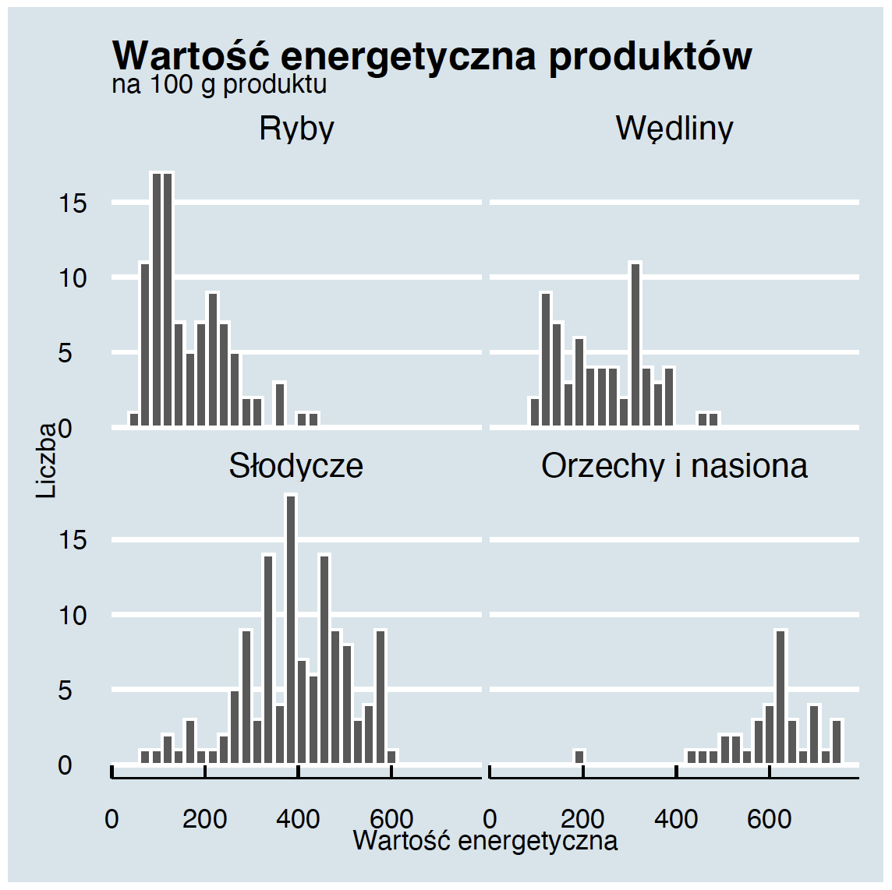
Każdy wykres obowiązkowo potrzebuje czytelnych opisów osi, tytułu i podtytułu. Bez nich ryzykujemy, że czytelnik nie zrozumie, co na wykresie jest pokazywane. Aby określić te elementy graficzne, możemy wykorzystać funkcję labs().
ggplot(data = food, aes(x = Energia)) +
geom_histogram(color = "white") +
facet_wrap(~Grupa) +
labs(title = "Wartość energetyczna produktów",
subtitle = "na 100 g produktu",
x = "Wartość energetyczna", y = "Liczba") +
theme_economist()6.3 Motywy graficzne/skórki
Na wykresie poza elementami przedstawiającymi dane występują też bardzo ważne elementy niezwiązane z danymi. Przykładowo: tło wykresu, krój tytułu wykresu czy wielkość etykiet na osiach. Rysunek Figure 6.6 przedstawia ten sam wykres z nałożeniem kilku różnych skórek. Jak widzimy, geometria danych się nie zmienia, ale wykres wygląda zupełnie inaczej.
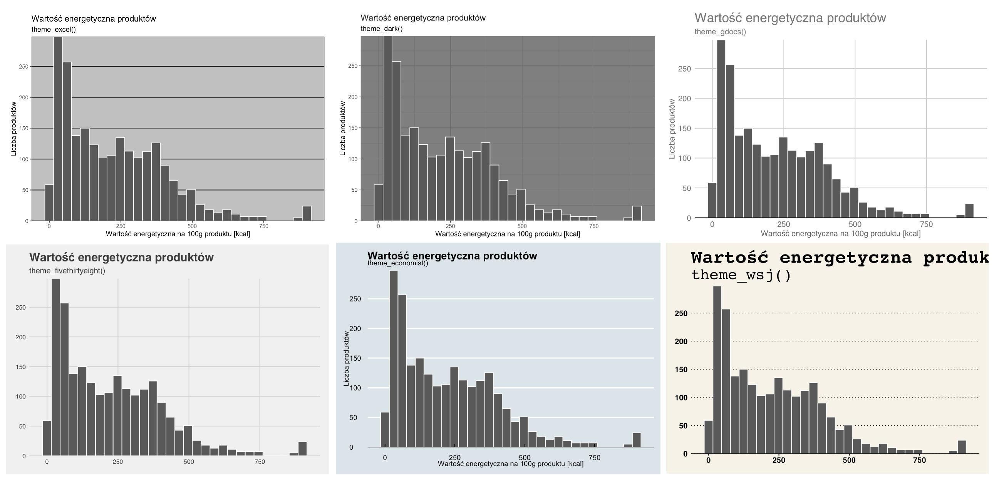
ggplot2. Nazwa skórki umieszczona jest w tytule wykresu6.4 Wykres kropkowy krok po kroku
Przyjrzyjmy się dwóm składowym żywnościowym naszych produktów – ilości białka i tłuszczów.
Krok 1 – Dane i osie.
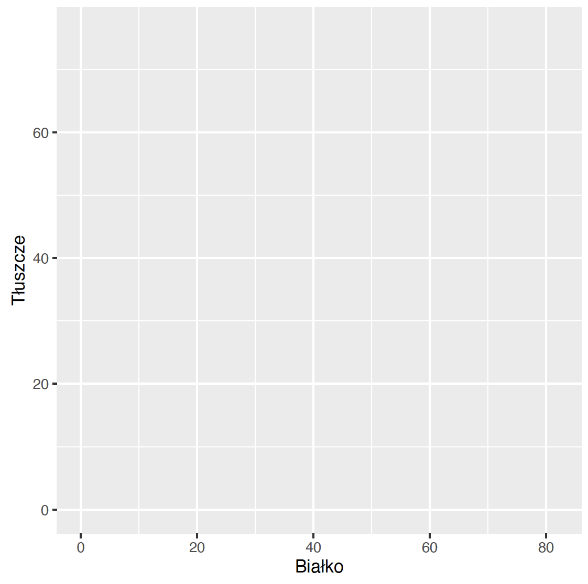
Każdy wykres zaczyna się od danych. Ponownie używamy funkcji ggplot(), aby zbudować szkielet wykresu. Ponownie korzystamy z danych food. Na osi OX zaznaczymy ilość białka, a na osi OY ilość tłuszczów w 100 g produktu.
ggplot(data = food, aes(x = Białko, y = Tłuszcze)) Krok 2 – Wykres kropkowy.
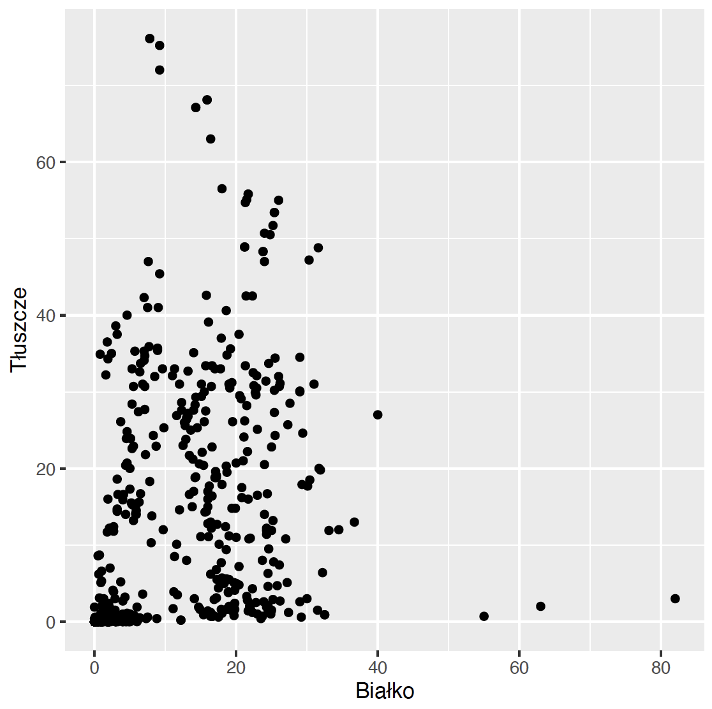
Przychodzi czas na wybranie geometrii. Aby narysować wykres kropkowy, wykorzystamy geometrię geom_point(). Współrzędne punktów są określone przez pierwsze dwie zmienne wskazane wcześniej funkcją aes().
Oczywiście sumaryczna zawartość białka i tłuszczów nie może być większa niż 100%. Wśród produktów widzimy takie, które mają bardzo mało jednego i drugiego składnika, i takie, które mają jednego z tych składników w granicach 15-35%. Wykres pozwala też zauważyć, że jest kilka produktów o wyjątkowo dużej zawartości białka lub tłuszczów.
ggplot(data = food, aes(x = Białko, y = Tłuszcze)) +
geom_point() Krok 3 – Mapowanie koloru, wielkości i innych atrybutów.
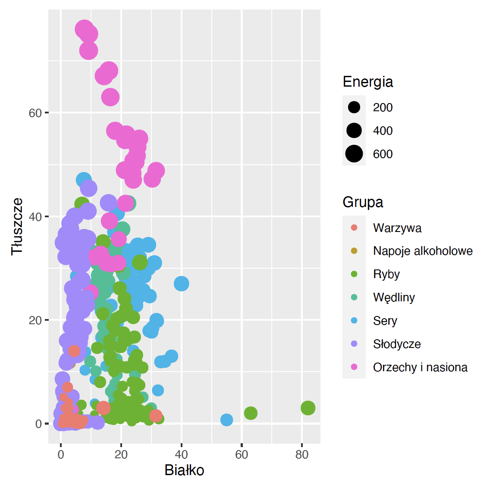
Pakiet ggplot2 pozwala na tworzenie wykresów w sposób deklaratywny. Jeżeli chcemy, aby na wykresie kolor kodował jakąś zmienną, np. grupę produktów żywieniowych, to wystarczy takie mapowanie zaznaczyć w deklaracji mapowań. Nie musimy mówić, jak to mapowanie ma wyglądać, jakich i ilu kolorów użyć, o to zadba sam pakiet ggplot2. Jedyne, co musimy zrobić, to w bloku mapowań w funkcji aes() należy zaznaczyć, która zmienna określa który atrybut.
W poniższym przykładzie żądamy, by zmienna Grupa była zaznaczona na wykresie przez kolor punktów, a zmienna Energia przez wielkość punktów. Zauważmy, że na wykresie automatycznie pojawi się legenda dla tych dwóch charakterystyk.
ggplot(data = food, aes(x = Białko, y = Tłuszcze,
color = Grupa, size = Energia)) +
geom_point() Krok 4 – Kontrola mapowania.
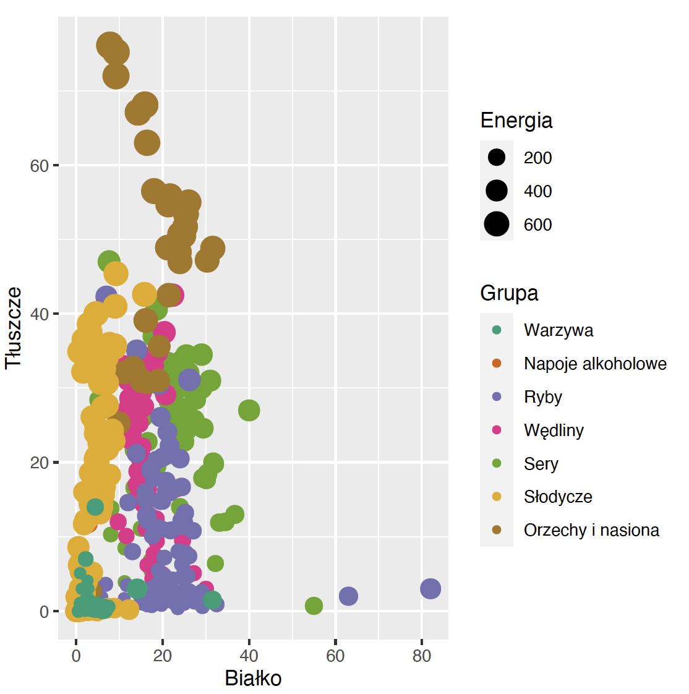
Ale co zrobić, jeżeli nam się nie podoba zaproponowane mapowanie? Chcielibyśmy inny schemat kolorów lub inny zakres wielkości punktów. Nad każdym mapowaniem mamy całkowitą kontrolę poprzez funkcje ustawiające skale wykresu. Takie funkcje mają nazwę rozpoczynającą się od prefiksu scale_, następnie jest nazwa atrybutu graficznego, a trzeci człon określa, w jaki sposób ten atrybut ma być skonstruowany.
Przykładowo, jeżeli chcielibyśmy zmienić sposób określana skali kolorów tak, by użyć kolorów ColorBrewer, to możemy do tego celu użyć funkcji scale_color_brewer(). Wystarczy określić, jaką paletę kolorów chcemy wykorzystać na wykresie.
ggplot(data = food, aes(x = Białko, y = Tłuszcze,
color = Grupa, size = Energia)) +
geom_point() +
scale_color_brewer(type = "qual", palette = "Dark2") Krok 5 – Tytuł, opis osi i skórka.
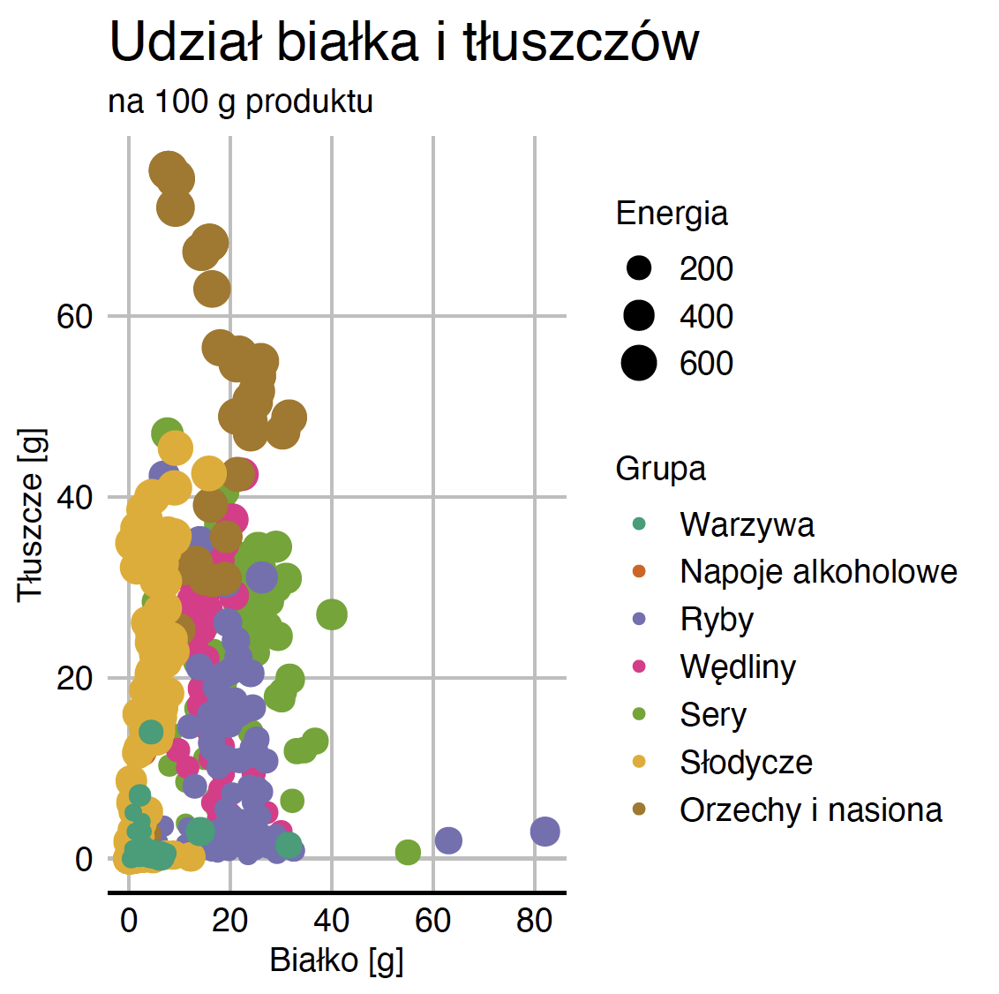
Mamy główną treść – czas na detale graficzne, skórki wykresu, tytuły osi, główny tytuł oraz podtytuł. Poniżej używamy funkcji, które pojawiły się już przy okazji omawiania histogramu. Ważne jest jednak, by zawsze uzupełniać wykres o odpowiednie adnotacje, bez tego może nie być on czytelny dla odbiorcy.
ggplot(data = food, aes(x = Białko, y = Tłuszcze,
color = Grupa, size = Energia)) +
geom_point() +
scale_color_brewer(type = "qual", palette = "Dark2") +
labs(title = "Udział białka i tłuszczów", subtitle = "na 100 g produktu",
y = "Tłuszcze [g]", x = "Białko [g]") +
theme_gdocs() 6.5 Mapowania zmiennych
Kluczowa koncepcja stojąca za filozofią pakietu ggplot2 to deklaratywne określenie, jakie zmienne powinny być przedstawione na wykresie oraz jaką rolę powinny pełnić. Te deklaracje pojawiają się wewnątrz funkcji aes() (ang. aesthetics).
Po zadeklarowaniu, co zmienna powinna na wykresie robić, pakiet ggplot2 zajmie się automatycznie przekształceniem wartości zmiennej na współrzędne punktów na wykresie. Poniższy wykres ilustruje koncepcję mapowania na przykładzie czterech zmiennych dla wykresu kropkowego.
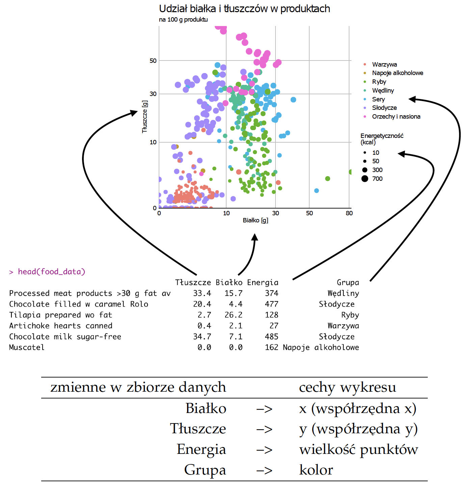
6.6 Skale dla mapowań
Zazwyczaj skale są tworzone automatycznie, ale istnieją sytuacje, w których chcemy wyłączyć autopilota i wziąć w swoje ręce kontrolę sposobu, w jaki dane są przekształcane. Pakiet ggplot2 umożliwia określenie kodowania każdego graficznego atrybutu. Skale są definiowane globalnie dla całego wykresu i są stosowane do wszystkich warstw jednolicie.
Jedną z najczęściej zmienianych skal jest skala kolorów. Zmieniana jest nie dlatego, że domyślne kolory są złe, ale często dlatego, że chcemy zwiększyć czytelność dla osób z dysfunkcjami widzenia kolorów, lub mamy własne indywidualne preferencje w tym zakresie.
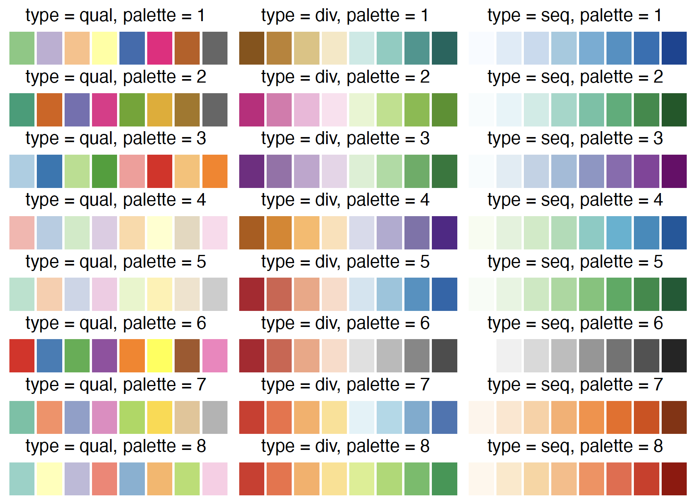
ggplot2, musimy określić dwa elementy. Po pierwsze, ile różnych wartości mamy do zakodowania. Po drugie, z jakiego rodzaju zmienną pracujemy: czy jest to zmienna w skali uporządkowanej, w skali z elementem neutralnym, czy w skali jakościowej. Na rysunku przedstawione są kolory zaproponowane przez Cynthię Brewer do przedstawienia ośmiu kolorów dla zmiennych jakościowych (pierwsza kolumna) oraz ilościowych z elementem neutralnym lub bez (kolejne dwie kolumny). Paletę można wybrać przez nazwę (np. Dark2) lub przez numer (np. 7)Innym bardzo interesującym atrybutem oprócz koloru jest wielkość punktu. Pozwala ona kodować zmienne ciągłe – im większa wartość danej zmiennej, tym większa kropka.
Dla zmiennych jakościowych ciekawą opcją do zakodowania ich wartości jest użycie kształtu. Domyślna skala kształtów obejmuje podstawowe figury geometryczne, puste i wypełnione trójkąty, kwadraty i koła. Alternatywą dla kształtów geometrycznych jest wykorzystanie kolejnych liter alfabetu. Interesującą dyskusję o wadach i zaletach różnych kształtów umieszczono w artykule Points of view: Plotting symbols (Krzywinski and Wong 2013). Polecamy też pozostałe artykuły z serii artykułów Points of view.
6.7 Wykres pudełkowy (boxplot) krok po kroku
Zobaczmy, jak skonstruować wykres pudełkowy. A przy okazji zobaczymy też, jak taki wykres wzbogacić o kilka dodatkowych warstw przedstawiających uzupełniające się perspektywy.
Krok 1 – Dane i osie.
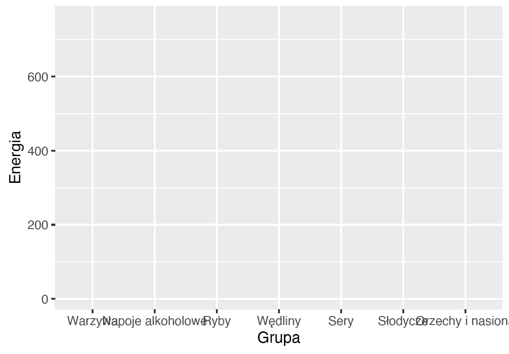
Wzorem poprzednich wykresów także ten zaczynamy od określenia, jakie dane posłużą do przygotowania wykresu, tutaj food, oraz jakie zmienne powinny się znaleźć na osiach – tutaj chcemy pokazywać zawartość energetyczną produktów w podziale na grupy produktów żywieniowych, obie zmienne trafiają do funkcji aes().
ggplot(data = food, aes(x = Grupa, y = Energia)) Krok 2 – Wykres pudełkowy.
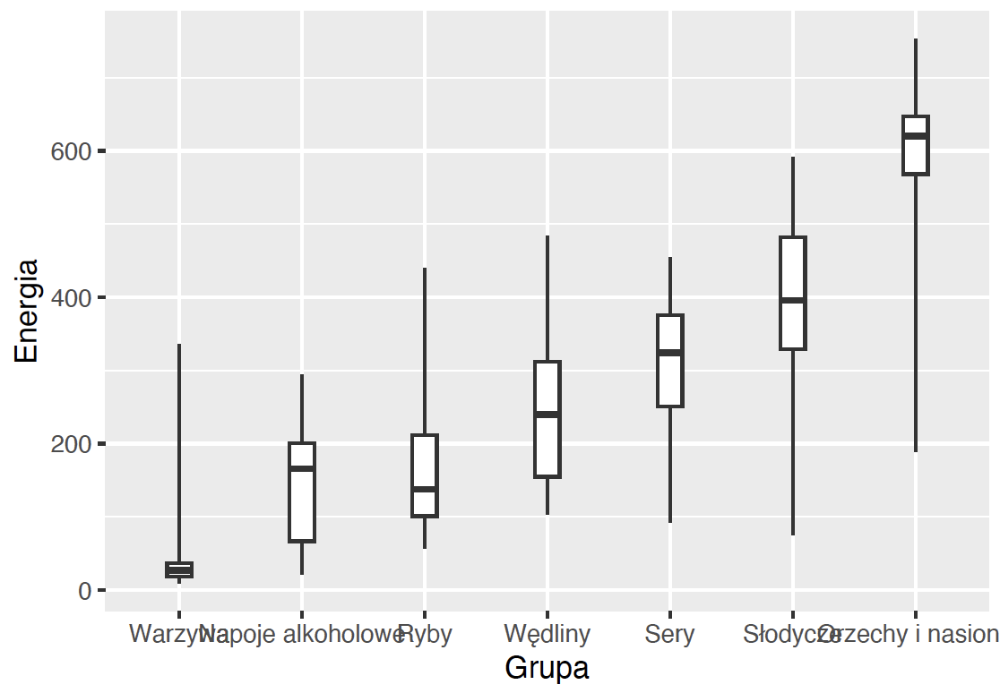
Czas wybrać geometrię. Dla wykresu pudełkowego jest to geom_boxplot(). Większość geometrii pozwala na określenie dodatkowych argumentów dla geometrii. Tutaj ustalamy szerokość wykresu pudełkowego, mniejszą niż domyślna (później się taka przyda), oraz oznaczamy, które obserwacje mają być traktowane jako odstające. Do tego służy parametr coef, ustawienie go na wartość 100 powoduje, że nie będą identyfikowane wartości odstające, a wąsy wykresów będą się rozpinały od minimalnej do maksymalnej wartości w danej grupie.
ggplot(data = food, aes(x = Grupa, y = Energia)) +
geom_boxplot(width = 0.2, coef = 100) Krok 3 – Obrót osi wykresu.
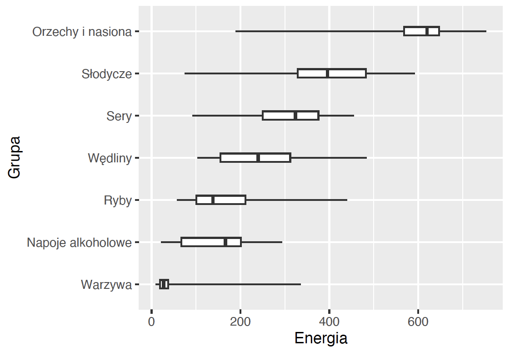
Domyślnie wykresy pudełkowe rysowane są pionowo (podobnie jak histogram czy wykres słupkowy). Ale to rozwiązanie ma kilka wad. Jedną z nich jest to, że na osi wykresu mogą się nie zmieścić pełne nazwy prezentowanych wartości. Inną jest to, że wykres ma większą rozdzielczość w osi poziomej niż pionowej.
Funkcje kontrolujące osie wykresu mają nazwy rozpoczynające się od prefiksu coord_. Przykładowo coord_flip() zamienia osie wykresu.
ggplot(data = food, aes(x = Grupa, y = Energia)) +
geom_boxplot(width = 0.2, coef = 100) +
coord_flip()Krok 4 – Więcej warstw z danymi.
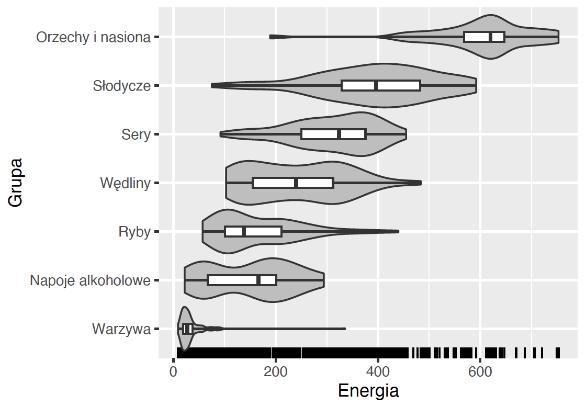
Na wykresie możemy mieć dowolną liczbę warstw z różnymi geometriami. Takie łączenie geometrii jest potężnym mechanizmem, pozwalającym na uzupełnianie różnych aspektów danych.
Pisaliśmy wcześniej o tym, że wykresy pudełkowe nie pokazują dobrze wielomodalnych rozkładów, więc dodamy do tego wykresu drugą warstwę z wykresami skrzypcowymi (czyli geom_violin()). Dzięki temu będziemy mogli odczytać i kwartyle, i mody rozkładu. Dodatkowo dodamy na dolnej osi znaczniki określające, gdzie są poszczególne obserwacje, za pomocą geometrii geom_rug().
ggplot(data = food, aes(x = Grupa, y = Energia)) +
geom_rug(sides = "l") +
geom_violin(scale = "width", fill = "grey") +
geom_boxplot(width = 0.2, coef = 100) +
coord_flip()Krok 5 – Warstwa z opisami.
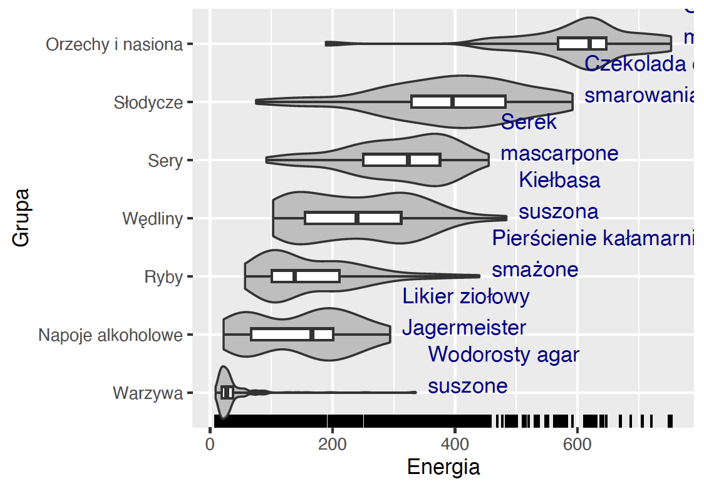
Wykres ma już trzy warstwy, ale wciąż jest miejsce na dodanie dodatkowej użytecznej informacji. Dodajmy więc nazwy produktów o najwyższej kaloryczności. Nazwy dodamy geometrią dla napisów, czyli geom_text(). Poniżej znajduje się przykład użycia tej geometrii.
W każdej geometrii można określać lokalne dane argumentem data=. Domyślnie geometrie biorą dane wskazane w funkcji ggplot, ale można też określać osobno dane dla każdej warstwy.
ggplot(data = food, aes(x = Grupa, y = Energia)) +
geom_rug(sides = "l") +
geom_violin(scale = "width", fill = "grey") +
geom_text(data = food_max, aes(label = Nazwa),
hjust = 0, vjust = 0, color = "blue4") +
geom_boxplot(width = 0.2, coef = 100) +
coord_flip()Zbiór danych food_max należy wcześniej przygotować. Aby skrócic ten przykład umieściliśmy gotowy zbiór w pakiecie BetaBit.
Krok 6 – Tytuł, opis osi i skórka.
Mamy główną treść, czas na określenie detali graficznych, skórki wykresu, tytułów osi i głównego tytułu oraz podtytułu. Poniżej używamy funkcji, które pojawiły się już przy okazji omawiania histogramu. Ważne jest jednak, by zawsze uzupełniać wykres o odpowiednie adnotacje, bez tego może nie być on czytelny dla odbiorcy.
ggplot(data = food, aes(x = Grupa, y = Energia)) +
geom_rug(sides = "l") +
geom_violin(scale = "width", aes(fill = Grupa)) +
geom_text(data = food_max, aes(label = Nazwa),
hjust = 0, vjust = 0, color = "blue4") +
geom_boxplot(width = 0.2, coef = 100) +
coord_flip() +
labs(title = "Rozkład wartości energetycznej", subtitle = "na 100 g") +
theme_gdocs() + theme(legend.position = "none")6.8 Warstwy
Jak zobaczyliśmy na przykładzie wykresu pudełkowego,unikalną możliwością pakietu ggplot2 jest składanie ze sobą na jednym wykresie różnych warstw prezentujących różne aspekty tych samych danych. Zazwyczaj warstwy te przedstawiają dane z różną szczegółowością. Każda warstwa składa się z jednej geometrii określonej funkcją geom_, ale geometrie możemy do siebie po prostu dodawać.
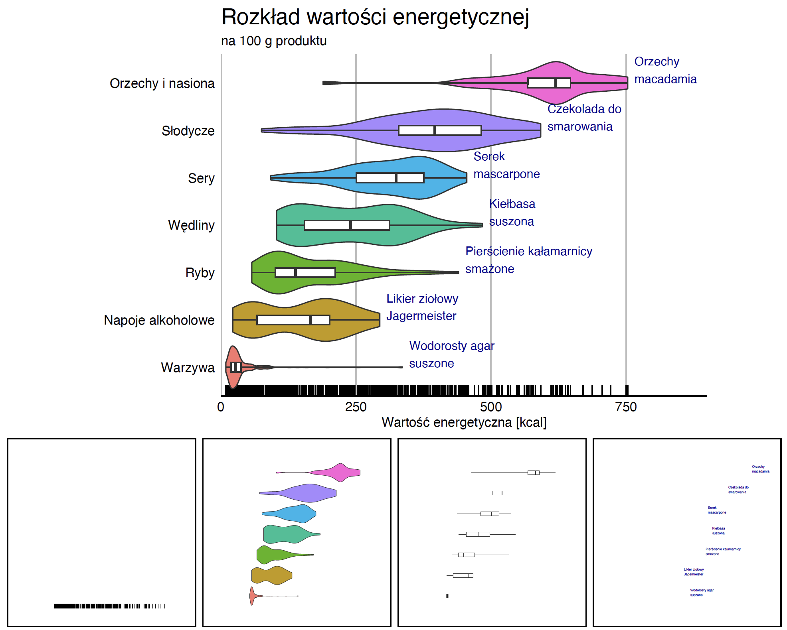
6.9 Reprodukowalność
Ważną zaletą pakietu ggplot2 jest odtwarzalność procesu tworzenia wykresów. Wykresy są wynikiem sekwencji instrukcji w języku programowania. Jeżeli po 10 latach będziemy chcieli odtworzyć wykres z zadanej sekwencji, to nic prostszego, wystarczy dany fragment kodu przekopiować do konsoli programu R. Wykresy nie są ,,wyklikane’’ w jednym czy drugim narzędziu. Uzyskujemy zapis wykresu, który można w każdej chwili odtworzyć lub zmodyfikować.
Odtwarzalność wyników, a więc także wykresów, jest fundamentem publikacji naukowych, ale też każdego porządnego raportu. Jeżeli w raporcie lub publikacji widzimy wykres z interesującymi zależnościami, czyż nie jest naturalne oczekiwać, że dany wykres można odtworzyć?
6.10 Zadania
Najlepszy sposób rozwijania umiejętności programowania w pakiecie ggplot2 to zadawanie pytań do danych i później uczenie się, jak zrobić wykres, który na dane pytanie odpowie. Poniżej znajdziesz sugestie kilku pytań na rozgrzewkę.
- Narysuj histogram ilości wody w różnych produktach. Zaznacz grupę produktów za pomocą koloru. Przeskaluj słupki dla kolejnych przedziałów, by łatwiej było zauważyć, jaki jest udział określonej grupy w produktach o danej zawartości wody.
- Wybierz z danych słodycze i zaznacz je na wykresie kropkowym, pokazując zawartość cukrów oraz zawartość tłuszczów. Które produkty najbardziej odstają od centralnej chmury punktów? Zaznacz na wykresie nazwy kilku najbardziej odstających.
- Wykorzystaj wykres pudełkowy, aby porównać zawartość cukrów, oraz drugi, aby porównać zawartość tłuszczów pomiędzy różnymi grupami produktów.
Jeżeli chciałbyś dowiedzieć się więcej o gramatyce wizualizacji danych, to może zainteresować cię esej Gramatyka języka wizualizacji danych z książki Odkrywać! Ujawniać! Objaśniać!
Osoby, które chciałyby głębiej poznać program i pakiet ggplot2, mogą znaleźć wiele szczegółowych informacji w książce ggplot2: elegant graphics for data analysis (Wickham 2009). W języku polskim więcej informacji o programie i bibliotece ggplot2 znajduje się w książce Przewodnik po pakiecie R (Biecek 2014). Podobne zasady tworzenia wykresów dla języka Julia są zaimplementowane w pakiecie Gadfly, a dla języka Python w pakiecie matplotlib.